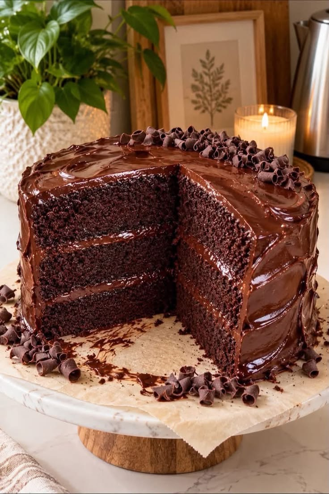

Bolo de Chocolate
O queridinho das crianças

Ingredientes
Massa
Ingredientes
Massa
- 2 xícaras de farinha de trigo
- 2 xícaras de açúcar
- 1 xícara de leite
- 6 colheres (sopa) de chocolate em pó
- 1 colher (sopa) de fermento em pó
- 6 ovos
Cobertura
Cobertura
- 2 colheres (sopa) de manteiga
- 2 xícaras de leite
- 1 xícara de chocolate em pó
Modo de preparo
Massa
Modo de Preparo
Massa
- Em uma batedeira, bata as claras em neve.
- Em uma batedeira, bata as claras em neve.
-
Adicione a farinha, o chocolate em pó, o fermento, o leite e bata por
mais alguns minutos.
-
Despeje a massa em uma forma untada e leve para assar em forno médio
(180° C), preaquecido, por 40 minutos.
Cobertura
Cobertura
-
Em uma panela, leve a fogo médio o chocolate em pó, a manteiga e o leite, deixe até ferver.
-
Despeje quente sobre o bolo já assado.